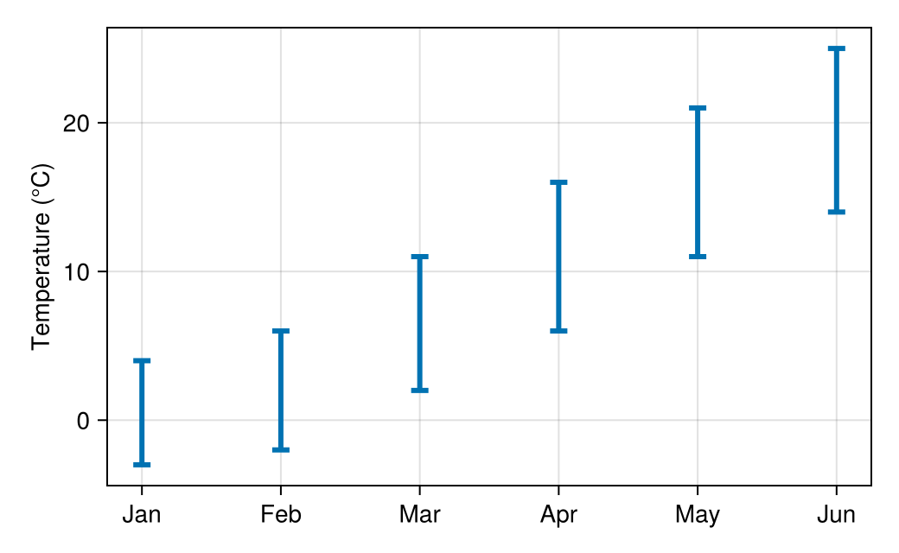

rangebars!
masque(fig) makes each range bar respond: hovering a bar shows where it sits and its two ends, and a click selects it and sends it to your notebook. Hover the bars below, then click one:
Notebook as text
using Masque, CairoMakie, Randombegin
months = ["Jan", "Feb", "Mar", "Apr", "May", "Jun"]
low = [-3, -2, 2, 6, 11, 14]
high = [4, 6, 11, 16, 21, 25]
fig = Figure(size = (520, 320))
ax = Axis(fig[1, 1]; xticks = (1:6, months), ylabel = "Temperature (°C)")
rb = rangebars!(ax, 1:6, low, high; whiskerwidth = 10, linewidth = 3)
nothing
end@bind pick masque(fig; bind = rb)
pickWhat a click returns
A click gives an ElementEvent with these fields. Here the figure passes the plot as bind, so pick is that event itself; with @bind sel masque(fig), it is sel.rangebars.
| Field | What it holds |
|---|---|
segment_index | which bar, in the order of your data |
x | where the bar sits; y for direction = :x |
low, high | the bar's two ends |
The tooltip writes x the way the axis writes its ticks, so here it reads "Jun" rather than 6.
Show your own data
Give each bar a payload, one per bar in the order of your data. A click then returns the payload's fields, and the bar's place moves from segment_index to pick.index:
Notebook as text
masque(
fig,
interactables(
rb;
payloads = [
(month = m, low = l, high = h) for (m, l, h) in zip(months, low, high)
],
tooltip = masque"<b>$(month)</b><br>$(low) to $(high) °C",
),
)Tooltips lists what a template can do.
Supported axes
rangebars! works on a 2D Axis.
Where to go next
For error bars around a value, see errorbars!. For a shaded band across the whole axis, see hspan!.